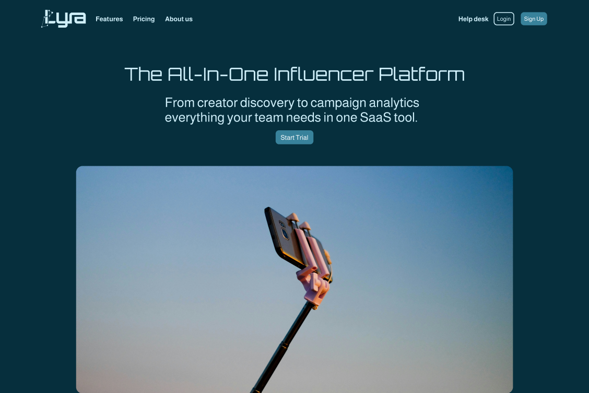
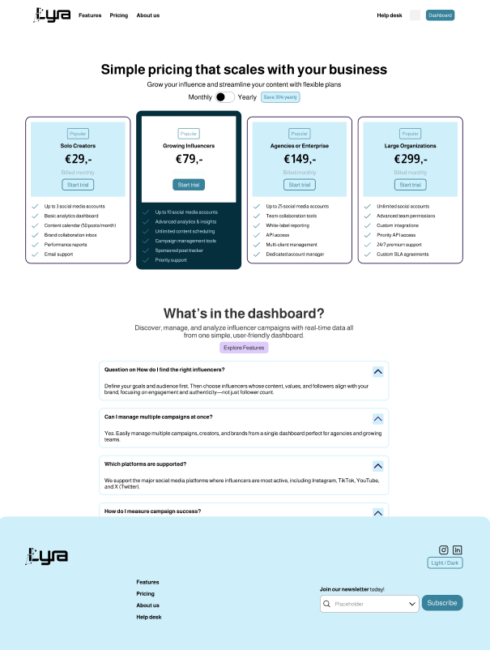
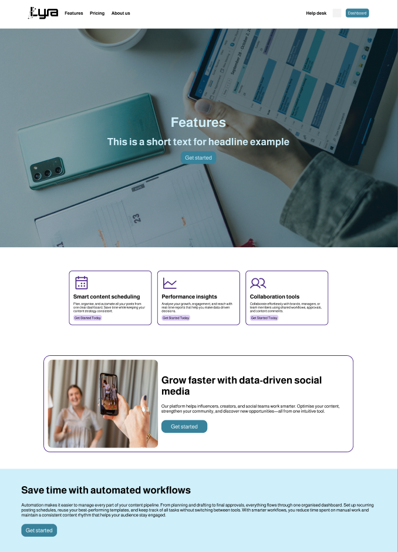

Social media SaaS platform
- Vak: UI Design 2
- jaar: 2025
- Tool(s): Figma
Tijdens het vak UI design 2 moest ik samen met een andere student binnen 12 weken een Social media SaaS platform ontwerp in elkaar steken, bestaande uit 4 verschillende delen. We begonnen met het een doelgroepanalyse, en het maken van een branding (logo, kleurpalet, typografie). Vervolgens begonnen we met het maken van een eerste UI kit versie, zodat de rest van de opdracht sneller zou verlopen. Deze hebben we doorheen het project ook meerdere keren verbeterd/veranderd.
Toen de UI kit af was, begonnen we met het maken van onze wireframes. Dit was voornamelijk onze gemaakte elementen op een pagina gooien in een logische volgorde, zonder nog aan kleur en opmaak te denken, want dit was bedoeld voor deel 3 van de opdracjt. Deel 3 bestond uit het opmaken en zorgen voor een goede hiërarchie over alle pagina's. Tot slot moesten we onze pagina's aan elkaar verbinden, zodat ze in de preview modus ook daadwerkelijk werkte als je op de knoppen klikte.
Het doel van deze opdracht was om de professionele werking van Figma te leren. Van hoe je een branding toepast op je project, tot het gebruiken van je zelfgemaakte UI-kit. Ook leerde we hier beter hoe je moet werken in teamverband.


